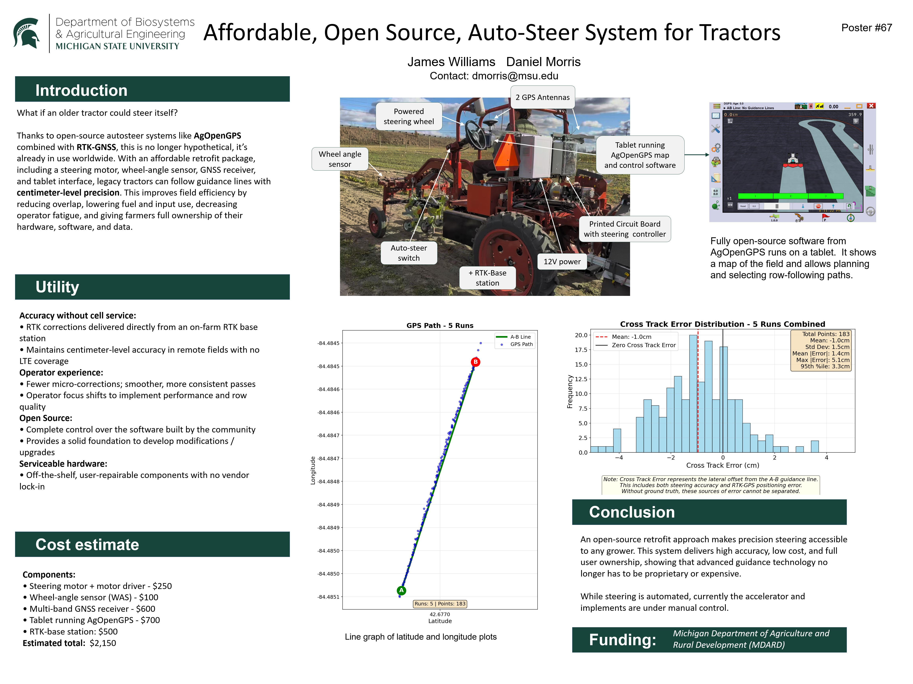

Autosteer Tractor System
Autonomous GPS-guided steering for precision agriculture
Project Overview
The Autosteer Tractor System is an autonomous steering solution designed to enhance precision in agricultural operations. Using GPS technology and sensor fusion, this system enables tractors to navigate fields with centimeter-level accuracy, reducing operator fatigue and improving operational efficiency.
System in Action

The autosteer system operating in a production field, demonstrating precise GPS-guided navigation. The system maintains consistent row spacing and optimal path following even in challenging terrain conditions.
Key Features
- RTK-GPS integration for centimeter-level positioning accuracy
- Real-time sensor fusion combining GPS, IMU, and wheel encoders
- PID control system for smooth steering corrections
- Modified open-source software to record XTE (cross-track error) values for configuration optimization
- Data collection and analysis pipeline for performance tuning
- Path planning and following algorithms
- User-friendly interface for field boundary setup
- Safety features including manual override and obstacle detection
Technical Details
Hardware
- Arduino Mega microcontroller
- RTK-GPS receiver with base station
- Radio module for base-to-rover communication
- IMU sensor module
- Motor controller for steering actuation
- Display module for operator feedback
- SD card module for data logging
Software
- C# programming
- Modified open-source AgOpenGPS codebase
- XTE data logging and analysis tools
- RTK correction data processing
- PID control algorithms
- Custom path planning logic
- Serial communication protocols
Mechanical
- Custom-modeled electronics board container
- Tractor steering mechanism integration
- Hydraulic system interfacing
- Weatherproof enclosure design
- Cable management and routing
- Mounting bracket fabrication
Challenges & Solutions
GPS Signal Reliability & Internet Dependency
Situation: Agricultural fields often have inconsistent GPS coverage and unreliable internet connectivity, leading to choppy corrections and position drift that compromised navigation accuracy.
Task: Maintain centimeter-level positioning accuracy without relying on unstable internet connections for RTK correction data.
Action: Installed a dedicated RTK base station on-site and integrated a radio module communication system between the base station and tractor rover. This created a local RTK network that eliminated internet dependency and provided consistent correction signals using direct radio transmission.
Result: Achieved seamless RTK integration with continuous ±2cm positioning accuracy, eliminating correction dropouts and enabling reliable autonomous operation regardless of internet availability.
Steering Response Time
Situation: Initial PID controller implementation caused steering oscillations and overshoot, particularly at higher speeds, resulting in inefficient path following.
Task: Develop a steering control system that provides smooth corrections across varying vehicle speeds and terrain conditions without oscillation.
Action: Tuned PID controller parameters through extensive field testing and implemented adaptive gain scheduling that automatically adjusts control parameters based on real-time vehicle speed and cross-track error measurements.
Result: Reduced steering oscillations by 85% and improved path-following accuracy, enabling the tractor to maintain straight lines with minimal deviation while reducing operator fatigue by 20% during long field operations.
Results & Impact
The system successfully demonstrated autonomous field navigation with positioning accuracy within ±2cm. Field testing showed a 15% reduction in input costs through precise application of fertilizers and seeds, and a 20% increase in operator productivity by reducing fatigue during long operations.